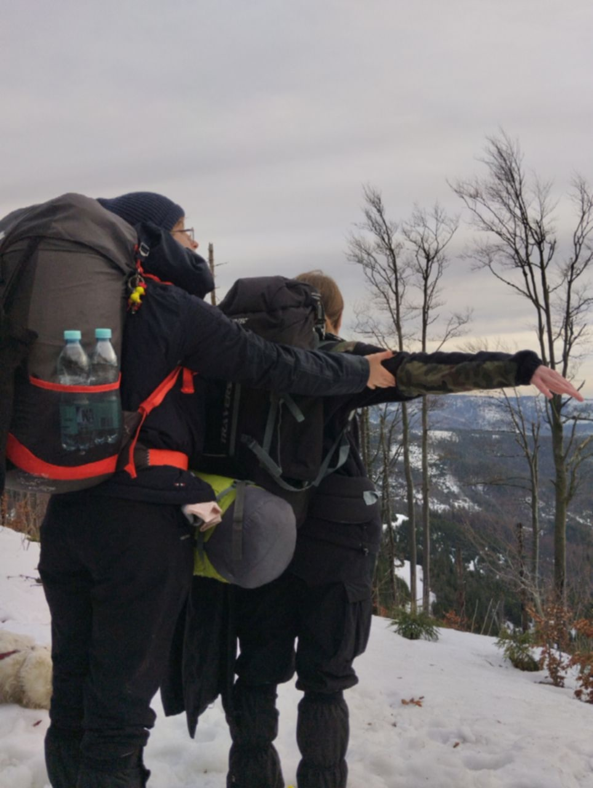
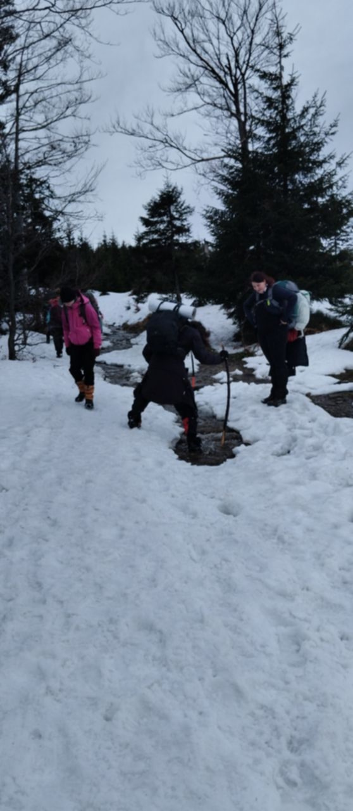
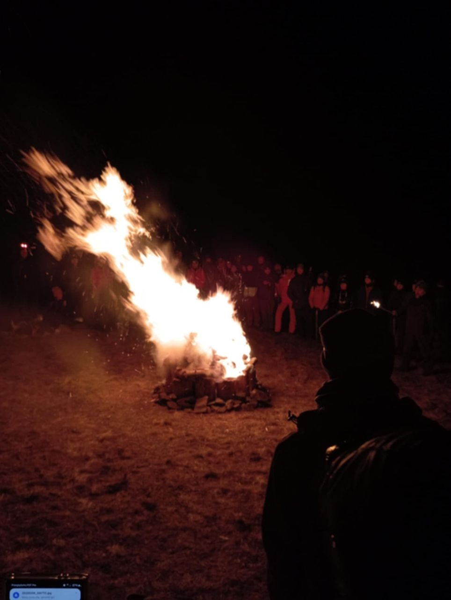
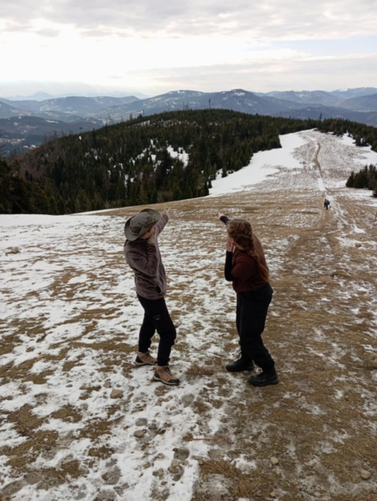
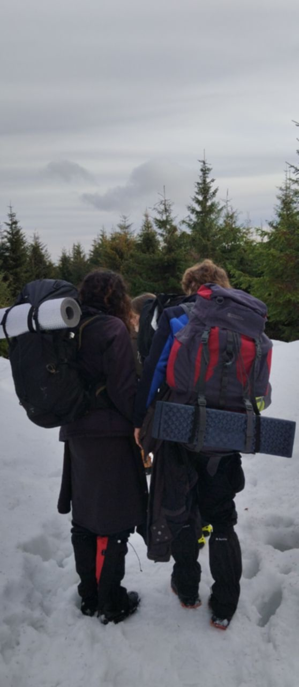
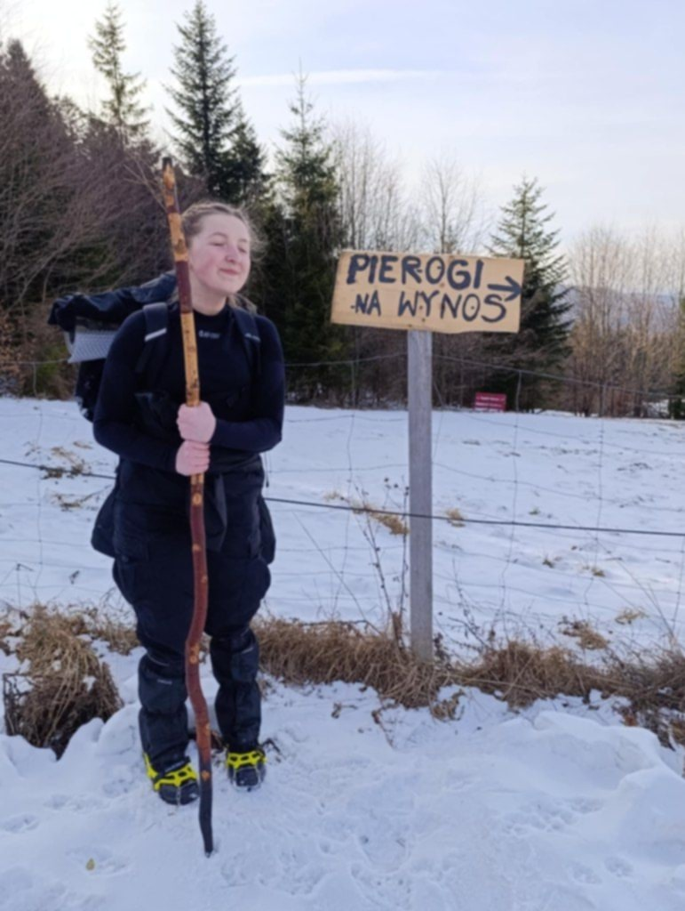

Patrol Zelma z 3 Drużyny Wędrowniczej „Bór” uczestniczył w XXII Zimowej Watrze Wędrowniczej. Główne cele? Sprawdzić siłę ducha, ciała i umysłu, dotrzeć na Halę Redykalną i oczywiście dobrze się bawić! 🥾 8 km trasy, przygotowanie obozowiska, nadanie naramiennika dh. Natalii, selfie z tablicami „Śladami Bartka”, odebranie srebrnej odznaki ZWW przez dh. Julię i Endera – to tylko część zadań, które udało się zrealizować. Była też integracja przy ognisku, obrzędowe rozpalenie Watry i drobne niespodzianki, jak pyszne jagodzianki w schronisku. Patrol Zelma poradził sobie znakomicie – mimo kilku opóźnień na trasie, wszystkie cele zostały osiągnięte.
     